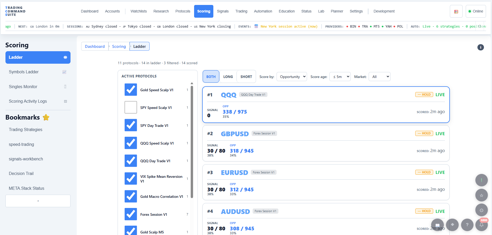
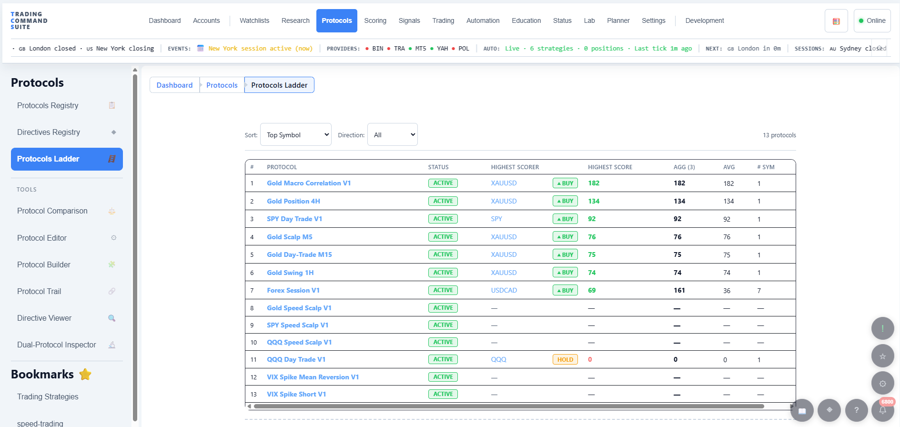
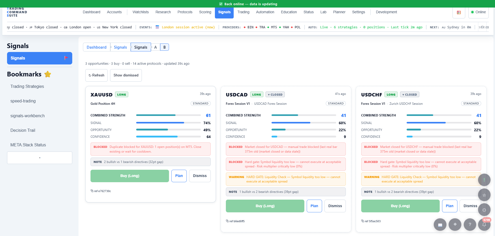
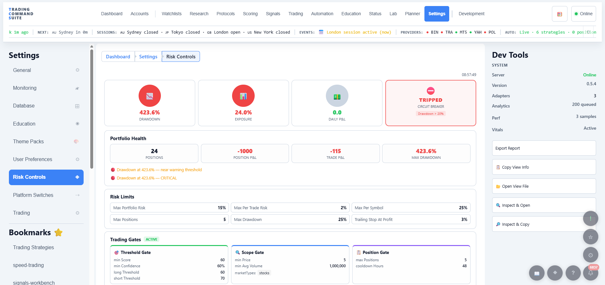

Score a market
Protocols built from directives, each with its own weight. Ten accounts of why a symbol scored what it scored — not one number and a shrug.
Open-source, self-hosted algorithmic trading. Protocols are built from named directives, each with its own weight — and every order carries a trail back to the rule that caused it.
AGPL-3.0 · runs on your machine · no telemetry · alpha, and honest about it

This software is not financial advice, and it is not configured to profit by default.
The full terms are the canonical financial disclaimer. Connecting a funded account is taken as accepting them.
By the numbers
Taken from the code by docs-facts.cjs and checked by the build — not typed from memory.
What it does
A self-hosted application: it holds no money, is not a broker and settles nothing. It connects to brokers and data providers with credentials you supply, and places orders through your own MetaTrader 5 terminal.
Protocols built from directives, each with its own weight. Ten accounts of why a symbol scored what it scored — not one number and a shrug.
Every order carries a chain back through the gate, the score and the directive that caused it. Queryable, not a log file you grep at midnight.
Backtesting and side-by-side A/B comparison. A verdict refuses to name a winner on a sample too small to support one.
No projected returns, no up-and-to-the-right chart. Every claim on this page is checkable in the repository.
Screenshots
Unretouched captures from a running installation. All 18 screens →



Getting it
There is no installer yet. Choose how far you want to go — the first track is ten minutes, the second is where trading actually happens.
Needs MySQL and Node.js. You get every page, the database, scoring, backtesting and charts.
Adds Windows, MetaTrader 5 and a broker account — live prices, positions and order placement. MetaTrader 5 is not required to run the app, only to trade through it.
Honesty
Stated explicitly, because the opposite is the norm in trading software.
Where to talk about it
No mailing list, no newsletter — so an answer stays findable.
Questions, ideas and polls. The roadmap post is where priorities are argued about.
Where testers talk to each other, and the fastest way to get an answer: join the Discord.
Progress notes and screenshots at r/TradingCommandSuite.